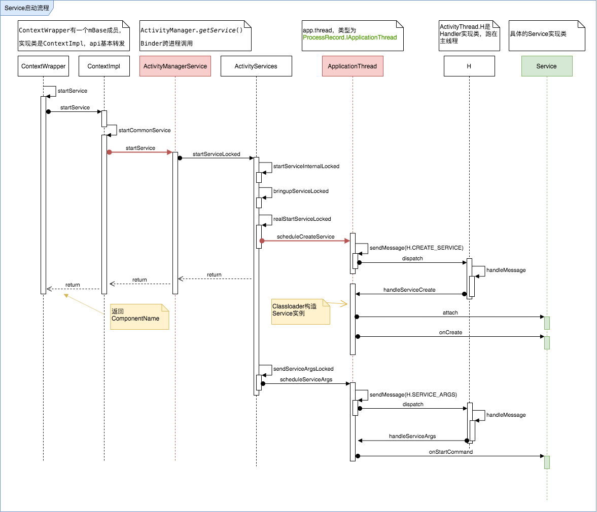

Service启动流程
Service有两种使用方式，本文分析startService情况下Service的执行流程
通过源码分析我们要解决以下问题：
- Service是如何创建的？
- Service的onCreate, onStartCommand怎么被执行的
- Service启动涉及哪些环节？
时序图
通过分析源码，我们提取核心的调用流程，其中深红色箭头代表发生了跨进程调用。

核心环节分析
整个调用流程横跨了较多类，我们简单归一下档
ContextWrapper, ContextImpl
作为顶层入口，提供了Service启动的调用API，如startService， bindService;
ActivityManagerService
系统服务，经常被称作AMS，App调用AMS是通过Binder机制实现的，AMS是系统服务。在这里提供了startService服务。
ActivityServices
工具类，负责实现AMS提供的API具体逻辑，比如AMS启动Service的API是startService，这个函数内部会执行AcitivtyServices的startServiceLocked, 从而将控制权转移到了ActivityServices中，根据启动service的上下文情况，陆续调用了其他函数：
- startServiceInternalLocked
- bringupServiceLocked
- realStartServiceLocked --> 跨进程调用scheduleCreateService
- sendServiceArgsLocked --> 跨进程调用scheduleServiceArgs
其中的两处跨进程操，会调用到ApplicationThread，他们分别是：
- 触发service创建流程的scheduleServiceCreate
- 触发serice生命周期onStartCommand
小结
现在我们解答一下开篇的疑问：
1. Service是如何创建的？
在上下文中，利用ContextWrapper提供的startService函数，经过一次Binder通信，调用到了系统的AMS服务，AMS服务通过工具类ActivityServices进行了上下文的处理，然后在经历一次Binder跨进程通信，将创建Service的动作通过Handler的消息发送给了ActivityThread.H, H这个Handler在handleMessage之后最终通过反射，用ClassLoader构造了Service实例。
2. Service的onCreate, onStartCommand怎么被执行的
在Handler处理过程中，创建完Service实例后，首先执行了serive的attach方法，然后在调用了onCreate方法。 至于onStartCommand，是在scheduleServiceArgs时触发。属于第二次跨进程调用的操作内容，类似的将SERVICE_ARGS消息发送给了ActivityThread.H，H这个Handler在handleMessage之后，通过缓存map，利用IBinder作为key，获取了上一步已经创建过的Service，然后执行Service的onStartCommand方法。
3. Service启动涉及哪些环节？
在Service启动过程汇总，先会尽量多次跨进程操作，包括向AMS发起startService的操作，以及AMS向目标App的ApplicationThread发起真正的Service创建，Service生命周期调用。